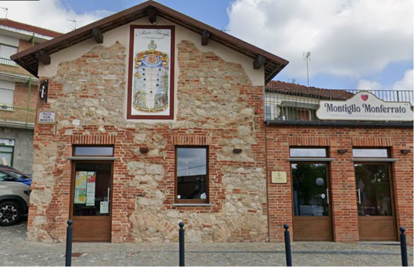
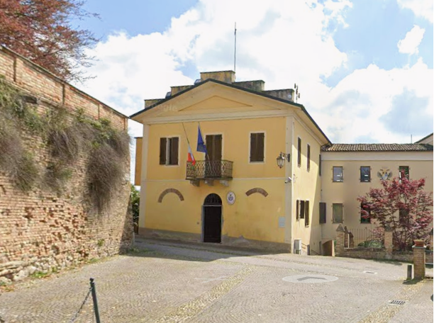
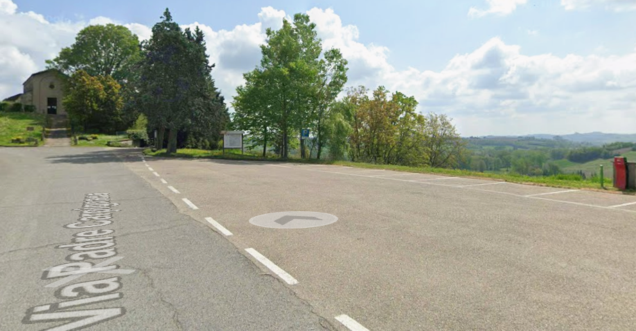
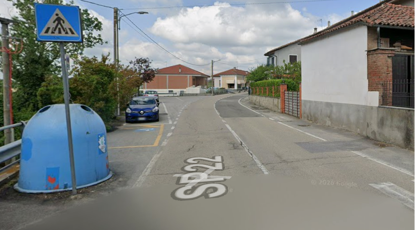
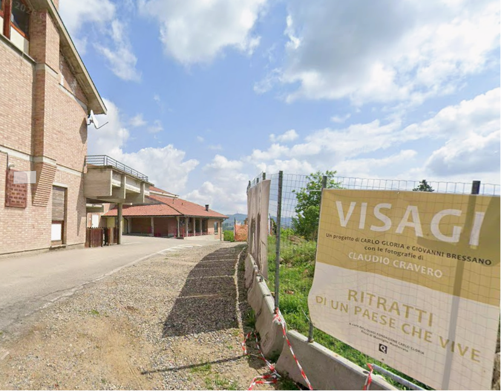
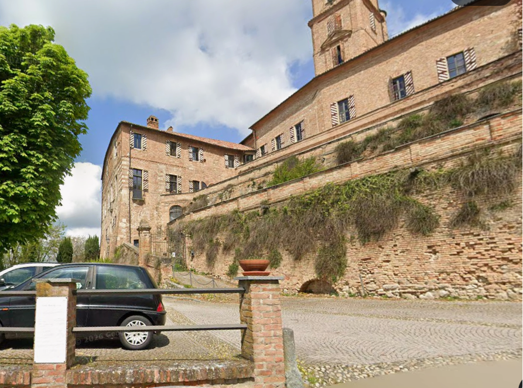
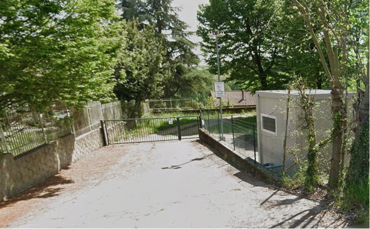
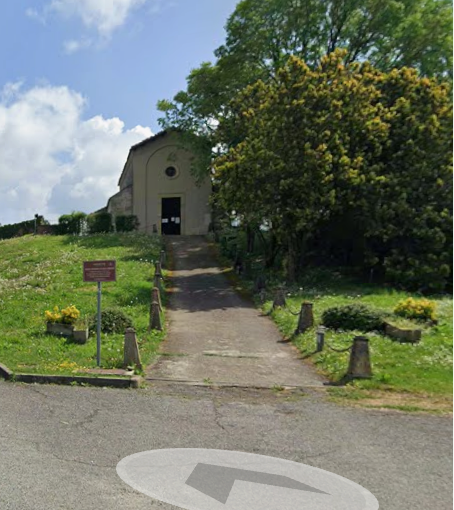

Partecipare alla Fiera del Tartufo di Montiglio Monferrato
In questa pagina sono raccolte le principali informazioni utili per organizzare la propria partecipazione e conoscere in anticipo i servizi disponibili.
Informazioni essenziali
Data: 4 e 11 Ottobre 2026
Luogo: Montiglio Monferrato (AT)
Mappa dell'evento:

Contatti accessibilità e informazioni
- Telefono: [inserire numero]
- Email: [inserire email]
- Orari di risposta: [inserire orari]
Per esigenze particolari è consigliato contattare l'organizzazione prima dell'evento.
Mappa e orientamento
La mappa della Fiera consente di individuare facilmente:
- punti di interesse;
- punti di accoglienza e informazione;
- parcheggi riservati;
- servizi igienici attrezzati e non attrezzati;
- area di ristorazione con prenotazione e senza prenotazione;
- area di decompressione;
- fermate della navetta e percorso del trenino.
Si consiglia di consultare la mappa prima della visita per pianificare il percorso più adatto alle proprie esigenze.
Punti di accoglienza e informazioni
Durante l'evento saranno attivi due punti di accoglienza dove ottenere informazioni, supporto e orientamento:
Punto Accoglienza 1
Ufficio Turistico
Piazza Regina Margherita

Punto Accoglienza 2
Davanti alla Sala Consiliare
Piazza Umberto I

Il personale e i volontari potranno fornire indicazioni sui percorsi, sulle attività in programma e sui servizi disponibili.
Parcheggi riservati
La Fiera mette a disposizione parcheggi dedicati alle persone con contrassegno disabili.
Parcheggi permanenti
Pieve di San Lorenzo
Parcheggio riservato situato sul sagrato della Pieve di San Lorenzo.

Via Torino presso Piazza Regina Margherita
Parcheggio riservato sullo spiazzo in Via Torino.

Entrambi consentono un accesso agevole all'area degli espositori.
Parcheggi temporanei su prenotazione
Salone Polifunzionale
Per accedere all'area ristorazione con prenotazione.

Piazza Umberto I
Per partecipare al Walking Tour.

Area Degustazione Pro Loco
Per accedere all'area di ristorazione senza prenotazione.

La prenotazione ai parcheggi riservati temporanei è consigliata attraverso il modulo dedicato.
Percorsi consigliati
Area espositori
La visita agli espositori intorno a Piazza Regina Margherita può essere effettuata lungo percorsi privi di barriere rilevanti.
Ristorazione presso il Salone Polifunzionale
L'area è attrezzata per consentire l'accesso alle persone che utilizzano carrozzine o ausili per la mobilità.
Pieve di San Lorenzo
È possibile richiedere l'accesso con autoveicolo fino all'ingresso della Pieve previa prenotazione.

Walking Tour
Il percorso panoramico comprende alcune aree che presentano limitazioni:
- la Chiesa di Sant'Andrea presenta gradini di accesso;
- l'Archivio Storico presenta salite con gradini elevati.
Restano invece accessibili:
- la Chiesa di Santa Maria della Pace;
- il percorso panoramico esterno.
Si segnala la presenza di alcuni tratti con pavimentazione in porfido.
Servizio trenino
Nel pomeriggio il trenino facilita la salita verso il Castello e le aree del Walking Tour.
Al mattino e alla sera il servizio viene utilizzato anche per il collegamento con le attività di Locomonferrato.
Servizi igienici accessibili
Sono disponibili tre servizi igienici attrezzati per persone con disabilità:
- presso l'Ufficio Turistico;
- presso il Salone Polifunzionale;
- presso l'Area Degustazione Pro Loco.
Sono inoltre presenti ulteriori servizi pubblici distribuiti nell'area dell'evento.
Area di decompressione e spazio tranquillo
Per chi necessita di una pausa in un ambiente più tranquillo è disponibile un'area di decompressione situata dietro l'Ufficio Turistico.
L'area è separata dalla zona principale della Fiera e offre uno spazio più raccolto e meno affollato.
Persone con mobilità ridotta
La Fiera promuove soluzioni per facilitare la partecipazione di persone con difficoltà motorie, anziani e visitatori che utilizzano carrozzine o altri ausili.
- consultare la mappa prima dell'arrivo;
- prenotare i parcheggi temporanei dedicati;
- segnalare eventuali esigenze specifiche tramite il modulo di assistenza;
- contattare l'organizzazione in anticipo per ricevere informazioni personalizzate sui percorsi.
Walking Tour: partecipazione delle persone con disabilità
La partecipazione al Walking Tour è gratuita per la persona con disabilità e per un accompagnatore.
Per una migliore organizzazione si consiglia la prenotazione anticipata.
Informazioni su alimentazione e allergeni
Le preparazioni alimentari della Pro Loco non garantiscono l'assenza di contaminazione crociata da glutine.
Le persone celiache o con particolari esigenze alimentari sono invitate a verificare direttamente con ciascun espositore:
- ingredienti utilizzati;
- modalità di preparazione;
- presenza di possibili allergeni.
In caso di esigenze specifiche è consigliato contattare preventivamente l'organizzazione.
Richiedere assistenza prima dell'evento
Per migliorare l'accoglienza e predisporre eventuali servizi dedicati è possibile comunicare in anticipo le proprie esigenze.
Attraverso il modulo online è possibile:
- richiedere informazioni sull'accessibilità;
- segnalare esigenze specifiche;
- prenotare i parcheggi temporanei riservati;
- richiedere supporto organizzativo.
Per richieste urgenti è possibile contattare direttamente i volontari della Pro Loco di Montiglio Monferrato alla email infopointmontiglio@gmail.com
Il nostro impegno per accessibilità e sostenibilità
La Fiera del Tartufo di Montiglio Monferrato lavora per rendere l'evento sempre più accessibile, inclusivo e sostenibile, migliorando progressivamente servizi, informazione e accoglienza.
L'obiettivo è favorire la partecipazione di pubblici diversi, valorizzando il territorio, le tradizioni locali e la qualità dell'esperienza per tutti i visitatori.
L'organizzazione raccoglie suggerimenti e osservazioni per continuare a migliorare le future edizioni dell'evento.
Con il sostegno della Fondazione CRT
La Fiera del Tartufo di Montiglio Monferrato è realizzata grazie al sostegno della Fondazione CRT nell'ambito del programma "Eventi per Tutti", che promuove eventi inclusivi e accessibili fondati su sostenibilità ambientale, protagonismo giovanile e valorizzazione del volontariato, con l'obiettivo di generare partecipazione e valore per il territorio.